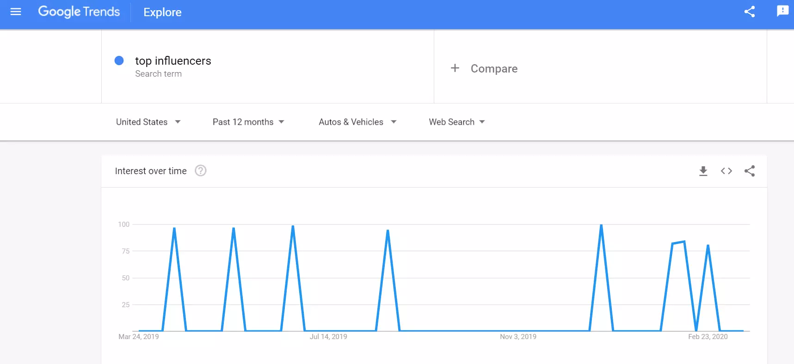
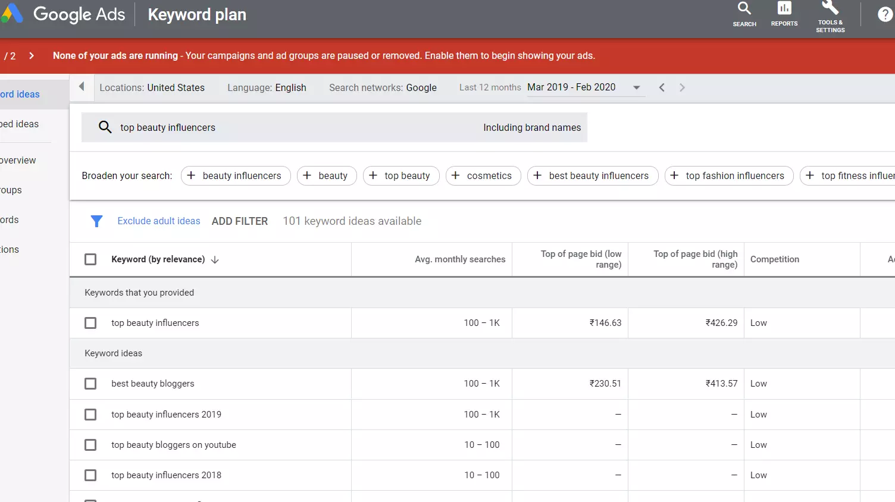
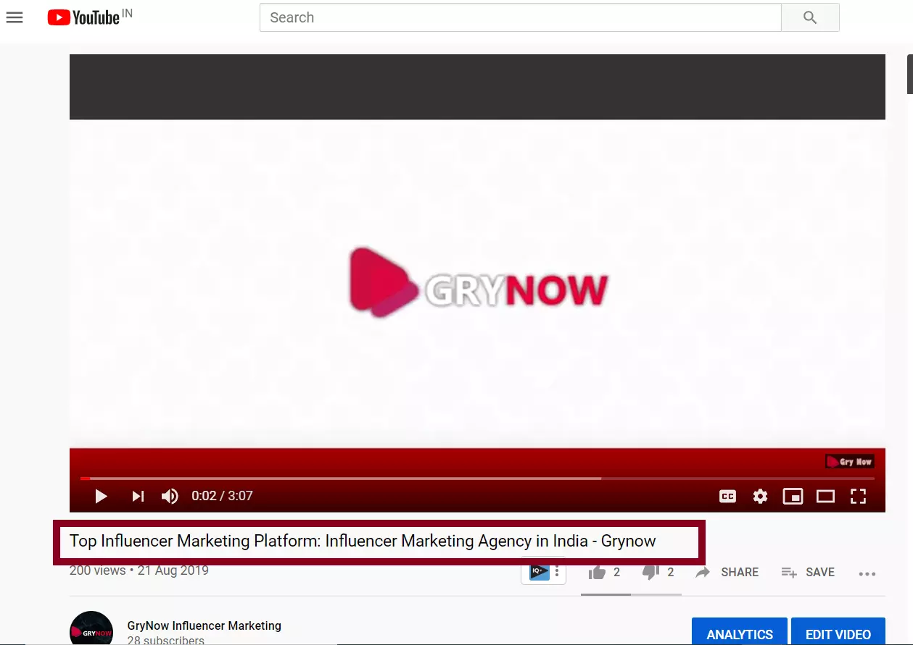

Hi Youtuber,

The second largest search and third most popular website of the world now covers 95% of the internet population and the viewers can now explore Youtube in 76 languages. Isn’t it amazing? Suddenly, it is, and therefore these are the solid reasons why all Youtubers no matter big or small are striving hard enough to get more subscribers, views, watch time and ultimately more money through AdSense / leads for businesses.
So, here’s the deal!
Here are best proven and tested ways to get more organic views and subscribers on YouTube and ultimately increase Youtube organic reach for your Youtube videos.
Contents
- 1. Youtube channel online reputation management
- 2. Research about Viewers
- 3. Profile Enhancement
- 4. Keyword research for Youtube channel
- 5. Youtube Suggestion Feature
- 6. Utilize Google Trends
- 7. Use Google Adwords
- 8. Get more organic and active Youtube subscribers
- 9. Youtube Video Optimization – Title, Meta description, tags for more viewership
- 10. Youtube Video Title Tag Optimization
- 11. Youtube Video Meta Tag Optimization
- 12. Custom-made thumbnail
- 13. Collaboration with other YouTubers of same / similar niche
- 14. Organize similar videos into a playlist
- 15. Focus on your buyer persona and YouTube analytics
- 16. Make long duration videos
- 17. Utilize Youtube cards in the end screen
- 18. Cross platform promotion
- 19. Interact with your audience for better engagement
Youtube channel online reputation management

Research about Viewers
To start improving your video views through organic reach, as a Youtuber you have to establish the authority in your niche or position yourself as a superior leader in the industry you are in. You should do in depth research about your target audience before making any video. Analyze the needs and wants of your viewers, what they want and what they don’t. This way you are giving your potential viewer a reason to watch your video i.e. the content which already interests them. Keep in mind what these potential viewers will be willing to watch.
Profile Enhancement
If you are a business / brand, you need to have your logo as a profile picture that will help in utilizing your already established brand equity in offline medium (can be online as well). Further, if are an influencer, then definitely you are a brand in yourself, leverage its potential in the profile picture as well.
Have a great descriptive Youtube channel art i.e. cover photo.

Describe about your Youtube channel in the “about section” in very clear words. This way you are clearly telling your viewers about your expertise.
Keyword research for Youtube channel

Make our videos more discoverable in Youtube search engine by using the right and relevant keywords. Now, what are these right keywords? Keywords or the phrases are the words which your targeted viewers might search in the Youtube search box for finding the solution of their query. And that’s it, you have to bang on it right there! Put that keywords / or the phrases which might be used by your viewers into your video’s title tag. Meta description, Tags. This way you are informing Youtube that put this video of mine into your register (data center) for these “keywords”.
Youtube Suggestion Feature

There are various strategies through which you can do keyword research for your Youtube videos. The simplest way to find relevant keywords is itself - YouTube, Yes! Log onto Youtube and search any keyword related to your niche, the Youtube itself will pop up similar keywords just below your search. Utilize them!
Utilize Google Trends

Google trends will show you the trends for a particular “keyword” i.e. what was the trend for that keyword in the last year in a particular country. This way you will find insights that which keywords are more searched, hence you can tailor your content accordingly.
Use Google Adwords

In Google Ads keyword planner tool, simply type the keyword into the search box and the relevant country in which you want your keywords to be ranked, that’s it, the tool will pop up similar keywords with their search volume and competition. You should focus on the keywords which have high search volume and low competition because it will be a lot much easier for your video to rank for these rather high competition keywords, initially. Using such keywords will make your videos easily discoverable. You can also initially buy YouTube Subscribers from reputed vendors that will give authentic, real and Active subscribers and they can help in improving the organic Youtube reach.
Get more organic and active Youtube subscribers
Distribute your Youtube channel everywhere, to leverage maximum organic reach. Youtubers can put it into email signature, on your website, on your blogs, on different social media platforms and profiles, email news letter, Facebook groups, Facebook communities, Linkedin groups, Whatsapp business groups etc.
Here are a few ways in which you can get more subscribers in order to improve YouTube videos organic reach:
Buy YouTube subscribers
One way to improve the organic reach of your YouTube videos is to buy YouTube subscribers that are real people and active YouTube users. When you buy subscribers through organic methods, they engage with your channel and produce a good engagement rate.
Ask viewers to subscribers
one of the easiest to get more subscribers to gain more organic reach is to simply ask & encourage your viewers to subscribe to your channel at the beginning and the ending of each video.
Pro Tip: In your Youtube channel, Go to “Branding Settings” , Add a personalized watermark to all your videos, hence whenever people will click on it, they will be redirected to your channel to subscribe to your channel.
Youtube Video Optimization – Title, Meta description, tags for more viewership
After, in depth keyword research, optimize all the tags with rest to them for better organic reach of Youtube videos
Youtube Video Title Tag Optimization

Use your focus keyword in the Title tag, use the right combination, permutations and combinations of the focus keywords. This will help you in ranking for more keywords rather than just one keyword.
Youtube Video Meta Tag Optimization

Use your main keywords in the Meta description tags, use the correct combinations, permutations and combinations of the relevant keywords naturally. This will help you in ranking for various keywords rather than just one focus keyword. Be convincing in describing your video in Meta description, as people and Youtube will know about your video better.
Pro Tip: Before uploading any of the video content on YouTube, make sure you rename the original filename with same name as the video title, this surely is a small and might seem irrelevant step however, it definitely play a side role in ranking your video on the YouTube search engine.
Custom-made thumbnail

Always create a customized and personalized thumbnail according to your channel and moreover your video. Don’t rely on Youtube auto generated thumbnail. A thumbnail is a representation of your video content in the picture form and is the first impression for your video when it comes in the video suggestions.
Top Youtubers have analyzed that thumbnails which have right combination of images and texts have better click through rate with respect to thumbnail that doesn’t have them. Hire someone who can create it on the Photoshop else if you want to make it yourself, you can use simple software like Canva or Piktochart to design a customized / personalized thumbnail. The text should be bold and clearly written, use clearer fonts, and the image should be clear enough to deliver the message. Never ever do click bait.
Pro Tip: You can use your own picture, if you are an influencer, else you can also use graphs if the video is a kind of tutorial
Collaboration with other YouTubers of same / similar niche
Collaboration opens the closed doors. You now have opportunity to attract each others’ audience. This way you not only increase new organic Youtube subscribers to your channel but also getting new organic subscribers of fellow Youtubers.
Organize similar videos into a playlist

If you have many videos that should be watched together in one go for the viewer’s complete satisfaction, always organize them into one playlist. This way your channel’s watch time will more and probably you will get more subscribers. By implementing this great practice you are making a viewer spend more time on your channel. Playlists not only help you gain more organic subscribers however it also multiplies your views.
Focus on your buyer persona and YouTube analytics

Always keep in your mind your ultimate buyer persona, even before making a video, research about them in advance to have a clear picture of your video which will be liked by your target market, as they are and will remain your main focus.

YouTube Analytics show you performance parameters in terms of demographics, age, gender of the people viewing / watching your videos, languages, countries in which your videos are being watched. Learn from the insights that what type of videos are performing better with respect to others, which audiences are liking your videos, tailor your upcoming videos according to the insights drawn from the analytics. . This way your videos will get ultimate organic reach.
Make long duration videos
Many Youtubers will advise you to make short videos for keeping viewer’s attention and they watch complete videos. However, my advice is just opposite to that. Always make longer videos, so that people watch more of your video. According to the Youtube as well, Youtubers should make longer videos, and hence viewers spend more time on Youtube. When you make longer videos, and if your video is lucrative / entertaining / educational, keep up a good retention rate, you will grab more watch time in the eyes of Youtube than shorter videos. YouTube search engine ranks videos that accumulate more watch time better (as they are sticking people within Youtube) and therefore your video receives more organic exposure, views and ultimately reach.
Utilize Youtube cards in the end screen
If you want a viewer to watch your channel’s other videos and ultimately spend more time on your YouTube channel, you can easily do this by utilizing your end screen by inserting YouTube cards i.e. thumbnails of other videos of the same channel.
Always keep few seconds of your video for the end screen, ask your viewers to become your subscribers and also embed video thumbnails / links to your other similar videos that you think the viewer would want to watch after watching your current video. This way you are sticking that viewer to spend more time on your YouTube channel and they also become more enticed to subscribe to your channel and hence contribute to your better organic reach of Youtube videos.
Cross platform promotion
Last but not the least, leverage the potential of cross platform promotion i.e. promote your videos on other social media platforms for the better viewership of your YouTube channel. Promoting your channel on your other social media platforms like Instagram, Facebook, Twitter etc. will undoubtedly bring relevant traffic from these platforms towards your YouTube channel and help your channel grow organically and help you increase your subscribers organically.
Interact with your audience for better engagement
Respond to as many comments as possible, at least within the first few hours of getting them. This shows your audience that you hold value for them and will contribute to loyalty towards your brand. Doing this will increase your engagement ratio. Heart your favorite comments! This feature from YouTube allows you to pay a special gesture towards any viewer.
According to YouTube, “Whenever a Youtuber heart a viewer’s comment, it makes that particular 3 times more likely to come back to that Youtube channel”. This makes the audience more committed towards you. Also, when YouTube notices extraordinary audience interaction on a certain video, it contributes towards the improvement of the overall ranking of the video in the Youtube search engine as well as in the Google search.
Implement these best practices and let us know how they helped you to improve your YouTube reach organically. Share with us your story of success!